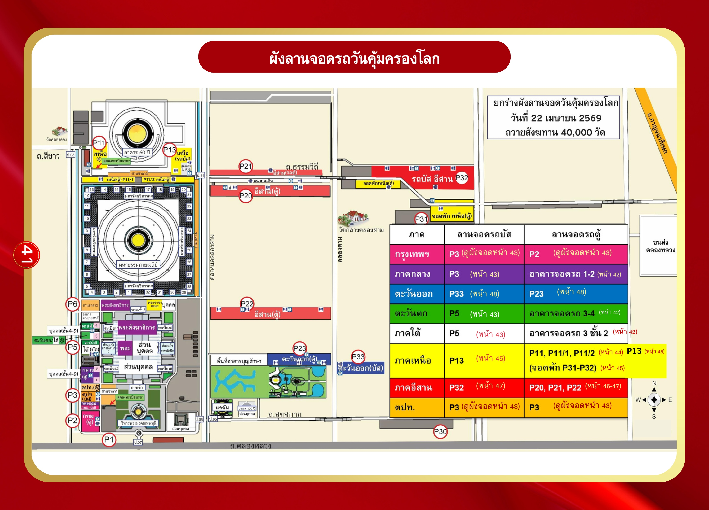

ผังลานจอดรถวันคุ้มครองโลก (ภาพรวม)
หน้า 41
ตารางสรุปลานจอดรถตามภาค
| ภาค | ลานจอดรถบัส | ลานจอดรถตู้ |
|---|---|---|
| กรุงเทพฯ | P3 (ดูผังจอดหน้า 43) | P2 (ดูผังจอดหน้า 43) |
| ภาคกลาง | P3 (หน้า 43) | อาคารจอดรถ 1-2 (หน้า 42) |
| ตะวันออก | P33 (หน้า 48) | P23 (หน้า 48) |
| ตะวันตก | P5 (หน้า 43) | อาคารจอดรถ 3-4 (หน้า 42) |
| ภาคใต้ | P5 (หน้า 43) | อาคารจอดรถ 3 ชั้น 2 (หน้า 42) |
| ภาคเหนือ | P13 (หน้า 45) | P11, P11/1, P11/2 (หน้า 44) P13 (หน้า 45) จอดพัก P31-P32 (หน้า 45) |
| ภาคอีสาน | P32 (หน้า 47) | P20, P21, P22 (หน้า 46-47) |
| ต่างประเทศ | P3 (ดูผังจอดหน้า 43) | P3 (ดูผังจอดหน้า 43) |
ตำแหน่งลานจอดรถในแผนที่ (จากเหนือลงใต้ จากตะวันตกไปตะวันออก)
- ถนนสีขาว (ทิศเหนือ): P11 (ภาคเหนือ รถตู้), P13 (ภาคเหนือ รถบัส), อาคาร 60 ปี
- ถนนธรรมวิถี (ทิศตะวันออก): P21 (อีสาน รถตู้), รถบัสอีสาน P32, P31 (อีสาน พักรถตู้ ภาคเหนือ)
- บริเวณวัด (กลาง): P20 (อีสาน รถตู้), มหาวิหาร, มหารัตนวิหารคด, สภาธรรมกายสากล
- ถนนคลองหลวง (ทิศใต้): P2 (กทม. รถตู้), P3 (กทม./กลาง/ตปท. รถบัส/ตู้), P5 (ใต้/ตะวันตก รถบัส)
- ทิศตะวันออกเฉียงใต้: P23 (ตะวันออก รถตู้), P33 (ตะวันออก รถบัส)
